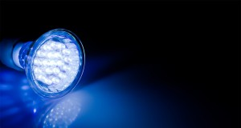
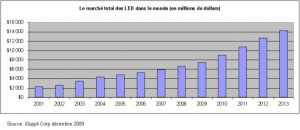
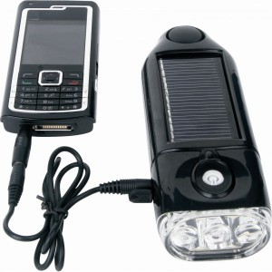
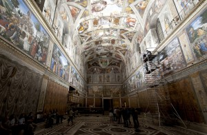
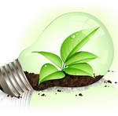

Bonjour à tous ! Pour cet article j'ai choisi de vous parler d'une
solution pour l'éclairage de demain, sujet qui pourrait bien vous
intéresser ! C'est vrai après tout ça. Comment pourrait-on vivre sans
lumière à portée de main, sans une source qui, bien orientée et avec des
propriétés optiques adéquates, permet de rendre nos soirées si
particulières, nous permet d'apprécier formes et beautés d'un monument
historique de nuit, une œuvre d'art dans un musée. Oui l'éclairage c'est
ce qui manifeste à nous le monde qui nous entoure et c'est bien pour
cela que nous devons en prendre soin et l'adapter au mieux avec les
besoins de nos sociétés en évolution.

Je décide donc de vous parler des LED (Light Emitting
Diode) ou DEL, en français les fameuses diodes électroluminescentes que
vous avez sûrement vues en cours de physique au collège. Ce petit
miracle semi-conducteur ne repose sur rien d'autre que sur une émission
de lumière lorsqu'il est parcouru par un courant. Ces LED qui sont
encore peu connues du consommateur et de l'acheteur par manque
d'information, de connaissances, de normes et de critères de qualités
clairs sont en passe de changer la donne dans les années à venir en
terme de qualité d'éclairage d'économie et d'environnement.
En effet, les conférences du ForumLED 2013 qui font état du marché de la
LED ont fait le constat suivant : Aujourd'hui 20% de l'électricité
consommée dans le monde est due à l'éclairage (14% en Europe) et la
consommation pourrait être réduite à 12% d'ici à 2050 . Par ailleurs,
l'éclairage représente aussi 6% des émissions de CO2 dans le monde.
Ainsi, supprimer les éclairages types lampes à incandescence et
standardiser de plus en plus les protocoles d'optimisation de
l'éclairage (détecteur de présence allumage/extinction automatique,
variateurs commandés par la lumière du jour, des meilleurs optiques etc)
c'est-à-dire adapter l'éclairage à l'utilisateur pourrait bien être d'un
grand secours pour l'économie mondiale et le problème de l'effet de
serre.

Le programme des Nations-Unis en.lighten a pour objectif
de remplacer les lampes à incandescence par des LED partout dans le
monde pour 2015 avec en priorité les pays en voie de développement pour
cible. La mise en place de normes minimales de performance énergétique
et une gestion de la transition respectueuse pour l'environnement
pourrait mener à de véritables économies d'énergie. Cela impliquerait
par exemple des limitations de construction de centrales électriques
diminuant ainsi le risque de blackout.

Cependant, aujourd'hui un quart de la population
mondiale n'a pas accès à un réseau public d'électricité. De fait,
l’association GOGLA tend à promouvoir le « off-grid », l'éclairage
hors réseau, autonome, qui permet à ces populations de s'éclairer
économiquement de façon nomade. L'idée repose sur des lampes à LED qui
peuvent s'assembler et s'installer facilement possédant une batterie
type lithium-ion avec comme source d'électricité un panneau solaire.
Le top en la matière peuvent aller jusqu'à recharger (port USB) un
téléphone, ce qui peut intéresser les populations isolées d'Afrique
qui se sont très vite équipées en téléphones portables, à opter pour
« la lampe SSL ». Même si l'industrie voit en grand avec des systèmes
qui permettraient d'alimenter Radio/TV, ventilateurs, etc seuls
quelques PME commencent vraiment à s'intéresser à ce marché propre à
la LED afin d'atteindre ces utilisateurs isolés.
Par ailleurs même les musées pour qui l'éclairage est le point le plus
délicat et important, ne voient qu du bon dans l'éclairage LED. Avec un
rendu de couleur élevé (>90) ré haussant ainsi la qualité visuelle de
l’œuvre (bon accord avec le facteur de réflexion des pigments utilisés
dans les peintures), un spectre continu sans émission d'ultraviolet et
infrarouge réduisant ainsi les risques d'altérer les œuvres et avec un
éclairage uniforme (de 50 à 100 lux quelque soit le point sur l’œuvre)
réduisant la consommation, le nouvel éclairage LED vient d'être approuvé
fin 2013 afin d'éclairer la chapelle Sixtine. La chapelle Sixtine étant
actuellement éclairée au plafond et au sol par des spots halogènes, il
est relativement peu évident de procéder à des remplacement ou des
nettoyages. Le seul bémol sera de modifier la climatisation afin de
dissiper la chaleur produite par les LED. Mais la flexibilité et la
discrétion d'un éclairage LED fait l'unanimité.

Au final, l'éclairage LED même s'il est peu coûteux et
possède de nombreux atouts pour améliorer le quotidien des personnes
n'en est encore qu'à ses débuts et a du chemin à parcourir en terme de
recherche & développement, de normalisation et de communication avant
d'inonder d'éclat nos avions, automobiles, nos routes et nos villes.
Mais pour sur, le développement de l'éclairage LED s'inscrit
parfaitement dans le débat de la transition énergétique et il en va du
bon sens de le prendre en considération afin d'amorcer un virage
économique et écologique.

Poulos
Commentaires